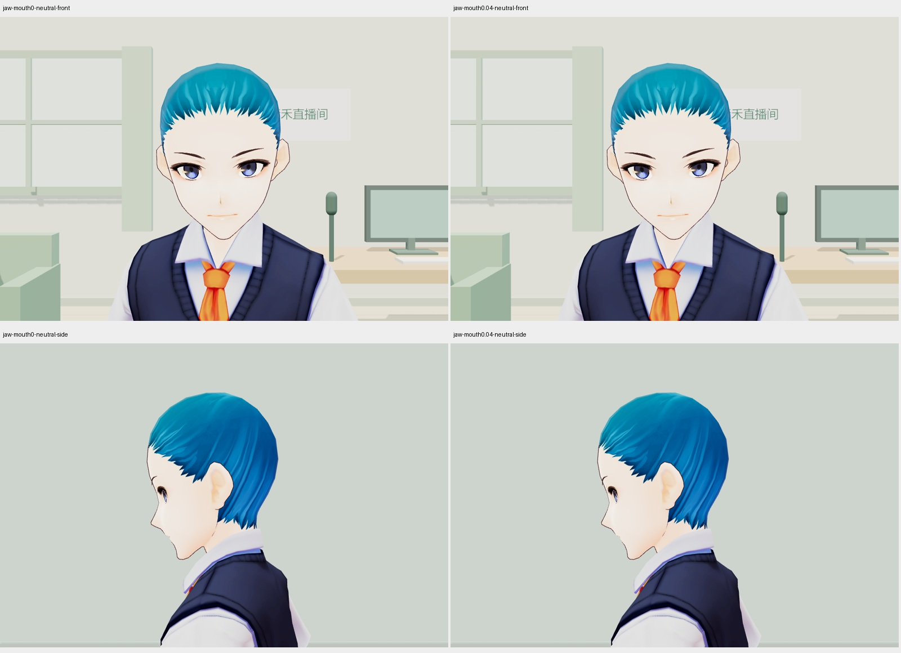

5d3311c32e19 · 男性下颌样件嘴宽 +4%
该固定身份原始证据保留；不冒充后续重建版本。仅原位/+4%两个值；眉鼻眼未适配。静态原/新同骨同相机；微小嘴宽变化不是自由捏脸。
实际连续1×讲话、注视、短裤走停、重置
同姿原位/+4%
review/pair-neutral.jpg
review/pair-happy.jpg
review/pair-aa.jpg
review/pair-ih.jpg
review/pair-ou.jpg
review/pair-ee.jpg
review/pair-oh.jpg

全时段2fps工程抽审
review/video-00.jpg
review/video-01.jpg
review/video-02.jpg
review/video-03.jpg
原尺寸图
jaw-mouth0-aa-front.png
jaw-mouth0-aa-side.png
jaw-mouth0-ee-front.png
jaw-mouth0-ee-side.png
jaw-mouth0-happy-front.png
jaw-mouth0-happy-side.png
jaw-mouth0-ih-front.png
jaw-mouth0-ih-side.png
jaw-mouth0-neutral-front.png
jaw-mouth0-neutral-side.png
jaw-mouth0-oh-front.png
jaw-mouth0-oh-side.png
jaw-mouth0-ou-front.png
jaw-mouth0-ou-side.png
jaw-mouth0.04-aa-front.png
jaw-mouth0.04-aa-side.png
jaw-mouth0.04-ee-front.png
jaw-mouth0.04-ee-side.png
jaw-mouth0.04-happy-front.png
jaw-mouth0.04-happy-side.png
jaw-mouth0.04-ih-front.png
jaw-mouth0.04-ih-side.png
jaw-mouth0.04-neutral-front.png
jaw-mouth0.04-neutral-side.png
jaw-mouth0.04-oh-front.png
jaw-mouth0.04-oh-side.png
jaw-mouth0.04-ou-front.png
jaw-mouth0.04-ou-side.png
layout-actions.png
layout-appearance.png
layout-inspection.png
实际导出本样件配方
·
范围与限制